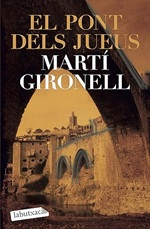

Los pueblos mas bonitos de cataluña
Los pueblos mas bonitos de cataluña
 ´
´
Besalú le da la bienvenida a todos los viajeros a la hermosa comarca de La Garrotxa y los transporta de golpe al medioevo. Si bien hoy en día poco queda del castillo y las murallas que le rodeaban en el pasado, tan solo la entrada al pueblo a través del puente hará ver que habrá merecido la pena visitarlo.
Este precioso pueblo medieval, además de por su arquitectura muy bien conservada, destaca por su entorno natural, único en la península ibérica. Pasear por las calles de este pueblo es como retroceder a épocas de condes y reyes.
El encanto medieval de esta localidad, ha inspirado una decena de libros y novelas, entre las cuales tenemos:

"El artista de Besalú. Trilogía"
"El Pont dels Jueus"
"La Guerra del Francés
al canto de Besalú"

"El Incienso de Besalú"